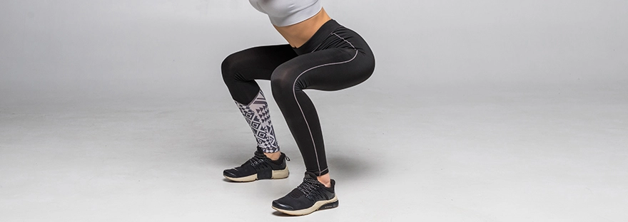

5 passos para o “bumbum” dos seus sonhos
11 de Junho de 2021

Todos nós temos algo no nosso corpo que gostaríamos de melhorar.
Um bumbum firme além de ser esteticamente atraente, trás várias vantagens que o ajudam a ter mais qualidade de vida.
Mas como conseguir moldar esta parte do corpo?
Deixamos 5 dicas, fáceis de pôr em prática, que vão fazer toda a diferença:
Treino específico de glúteos:
Dia sim/dia não, em 10 minutos, e plim… o seu glúteo vai parecer outro. Pode variar entre agachamentos, ponte, abdução de perna, stiff modificado, entre outros. Entra estes exercícios específicos em:
https://fitgym-pt.fmworld.com/desafios/90diascomfitgym-88/Fuja dos elevadores:
As escadas são um bom amigo do nosso “bumbum”. Sabia que ao subir escadas, de forma consciente, pode estar a treinar o seu glúteo. Para isso basta contrair o músculo de forma consciente enquanto vai para o andar de cima. Pode também fazê-lo em bicos de pés. Desta forma concentra ainda mais o esforço.Faça caminhadas em subidas:
As caminhadas por si, ajudam a aumentar o gasto calórico, a melhorar a capacidade cardio respiratória, a tonificar abdominal (se o mantiver contraído enquanto caminha para manter uma boa postura), aliviar o stress e a ansiedade… Mas sabe como as aproveitar para levantar o seu bumbum?
Faça subidas! O esforço que aplicamos na subida, concentra e isola o esforço nos músculos do glúteo.Use saltos altos:
Os saltos altos são sinónimo de elegância, beleza, sensualidade… e canseira!
Embora só as senhoras os consigam usar e o seu uso contínuo não traga muitos benefícios, podem ser vistos de forma positiva. O uso de saltos altos de vez em quando, não cria problemas graves e ajuda a tonificar o glúteo.
A postura que adquirimos quando temos de manter o equilíbrio em cima dos “tacões” faz com que haja uma contração quase contante deste músculo.
Afinal as festas até têm coisas boas!Estenda a roupa:
Se a falta de tempo serve de desculpa para não treinar… já era! Use e abuse das tarefas domésticas para completar os seus treinos. Basta adaptar pequenas tarefas do dia a dia. Como estender a roupa em bicos de pés, e mantendo uma postura correta, pode promover o trabalho muscular e ajudar a criar um glúteo de fazer inveja.